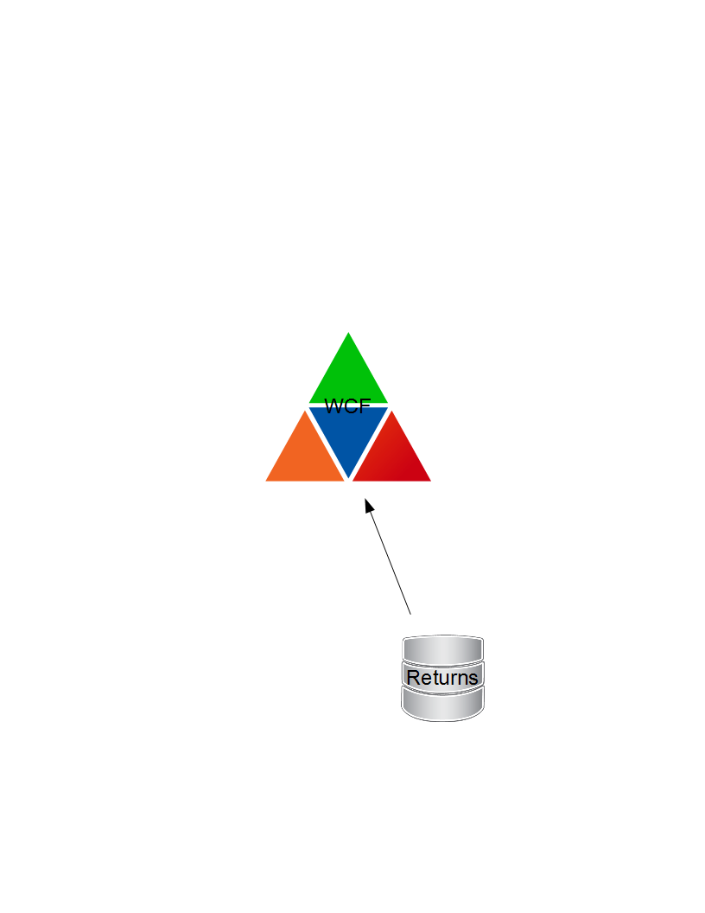

ReturnsCalc
From Legacy to Modern Technology
The Returns Problem
- 6 to 8 Implementations of Returns
- Numbers were Difference
- Returns 2.0 - Not Reusable
- Pearl Code was Unmaintainable
Create a New One
NO
Picked ReturnsCalc
ReturnsCalc Architecture
- Code base started 7 yo 10 Years Ago
- .NET 2.0
- WCF Service
- Bugs in Calculations
- Unclear Params / Results
- To Slow for Dimensional.com
- No Automated Tests
- Code was a Mess!
Architecture
Refactored Code
Driven by Tests
How

ReturnsCalc Refactored Architecture
- .NET 4.5
- WebApi 4
- MVC 4
- Angular.js
- NServiceBus 4
- High Test Coverage
- Better Codebases